.jpg)
Who is Grand Admiral Thrawn?
Grand Admiral Thrawn is a fictional character from the Star Wars universe. Being an alien and grand admiral, thrawn is known for his strategic mind and tactical brilliance, being able to climb the ladder of power and surpass the mass xenophobia of the galactic Empire.
The Thrawn Trilogy:
A series of books released between 1991-1993, the Thrawn trilogy is first set of literature in the Star Wars universe to mention Thrawn. Throughout the books it follows Grand Admiral Thrawn as he runs into conflict with Luke Skywalker and his friends. The books are:
- Heir to the Empire
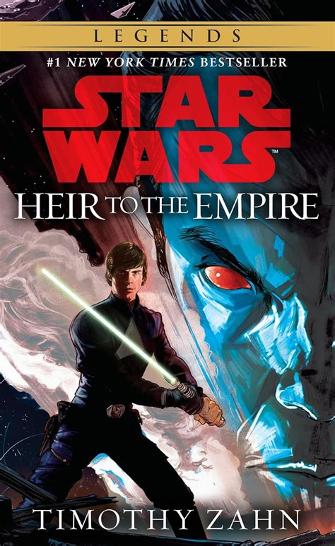
- Dark Force Rising
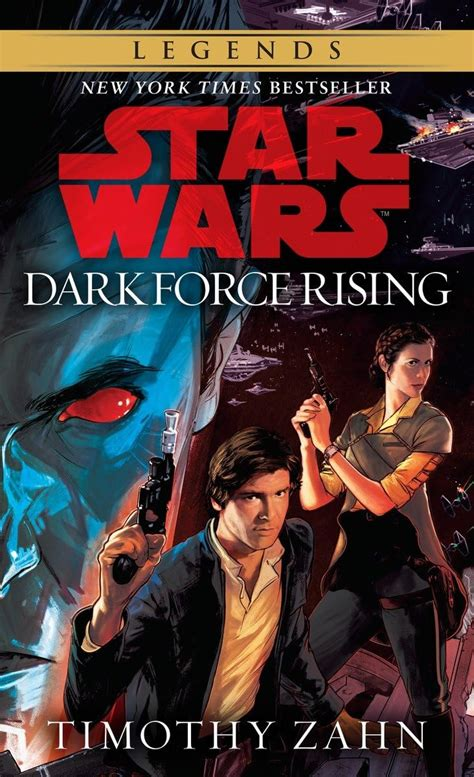
- The Last Command
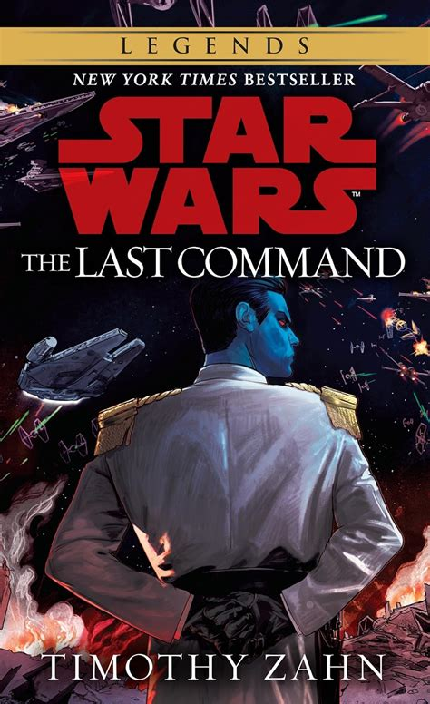
Thrawn in Cinema:
Thrawn has made few appearances throughout different shows. So few infact here is the complete list:
- Star Wars Rebels
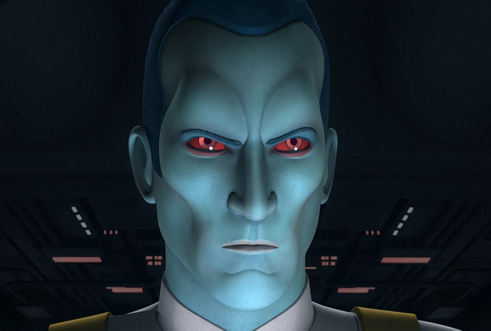
- Ahsoka Series
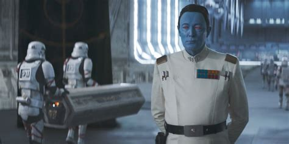
He is also referenced in the Mandalorian series, but does not make a physical appearance.
Thrawn in Other Literature:
Thrawn makes more appearances in novels though, in total being in 11 books across 3 trilogies, 1 duology, and a few standalone novels. these books, excluding the original trilogy, are:
The Thrawn Trilogy (2017-2019):
- Thrawn
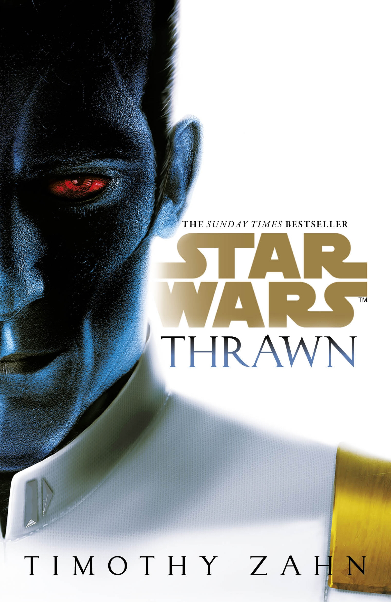
- Thrawn: Alliances
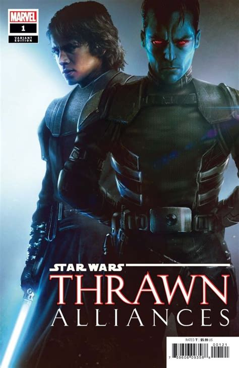
- Thrawn: Treason
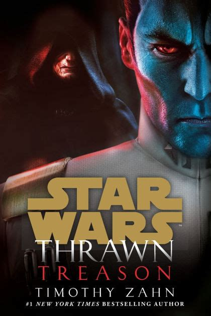
Thrawn Ascendancy Trilogy (2020-2021):
- Thrawn Ascendancy: Chaos Rising
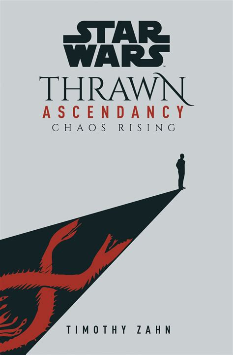
- Thrawn Ascendancy: Greater Good
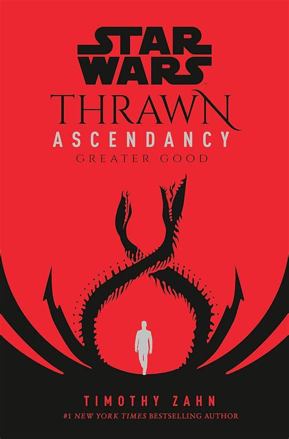
- Thrawn Ascendancy: Lesser Evil
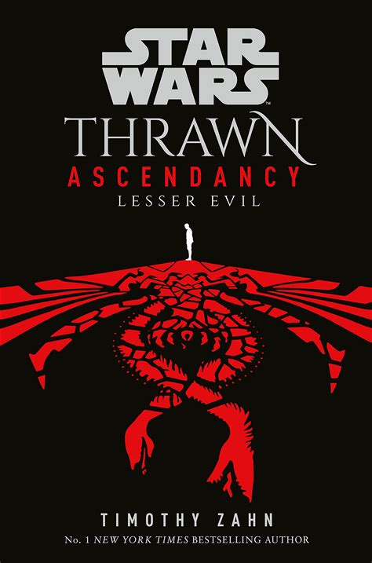
Thrawn Duology (1997-1998):
- Specter of the Past
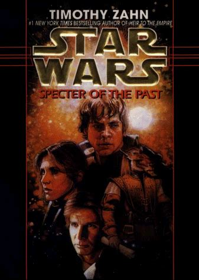
- Vision of the Future
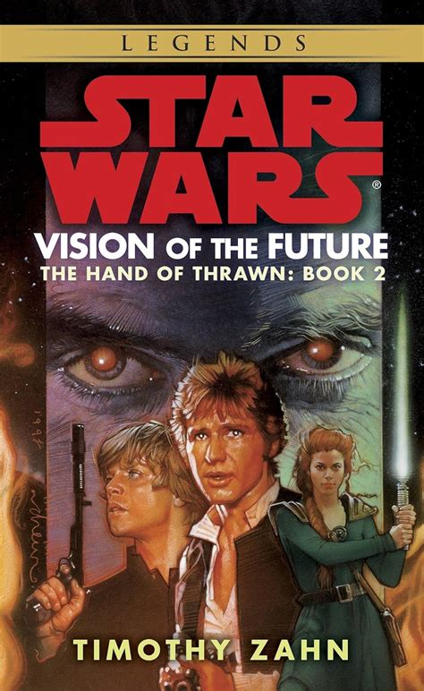
Standalone Novels:
- Outbound Flight
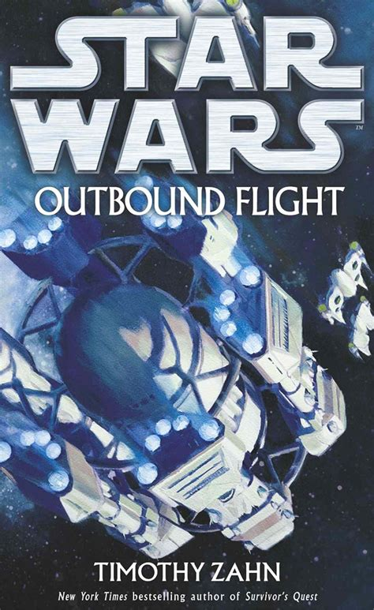
- Survivor's Quest

- Choices of One
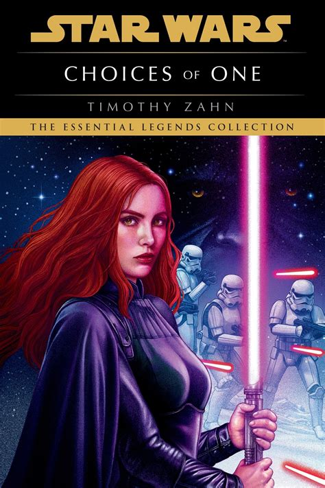